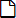
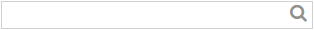

Cambia la contraseña introducida al iniciar la cotodesign Template y el cotodesign Order Viewer.
Cambie la contraseña periódicamente para mejorar la seguridad.
Lista de Template y Lista de Print Layout |
Estas son las listas de «Template» y «Print Layout» registradas en cotodesign.
Botones de la esquina superior derecha de la pantalla

Cambia la contraseña introducida al iniciar la cotodesign Template y el cotodesign Order Viewer.
Cambie la contraseña periódicamente para mejorar la seguridad.

Muestra el archivo de ayuda en línea.
IDIOMA

Cambia el idioma de la pantalla.
Lista de Template

Crea una nueva plantilla.
• Objeto relacionado >> Determinación del tamaño y del método de impresión de una plantilla

Edita la plantilla.

Importa un archivo SVG y añade una nueva plantilla.
Para las especificaciones del archivo SVG, consulte la «Guía de instalación de cotodesign».

Muestra la vista previa de la plantilla.
La configuración no se puede cambiar.

Elimina la plantilla.
Importa un archivo de plantilla y lo carga al servidor.

Guarda la plantilla seleccionada.

Introduzca una parte del nombre de una plantilla para filtrar los archivos de plantilla que se muestran en la lista de plantillas.
NOMBRE
Muestra el nombre del archivo de la plantilla registrada.
Los nombres de los archivos de las plantillas están sujetos a reglas de denominación e indican una configuración de capas separadas por puntos.
TIPO DE IMPRESIÓN
Cuando imprima en una impresora, seleccione «Impresión a color». Cuando utilice un decorador láser, seleccione «Imprimir lámina». Cuando utilice una impresora de metal, seleccione «Impresión en metal». Cuando utilice una máquina de corte, seleccione «Corte».
Haga clic en «▼» y seleccione «TIPO DE IMPRESIÓN» para filtrar los archivos de plantilla que se muestran en la lista de plantillas.
EFECTO ESPECIAL
Cuando se utiliza «COLOR DE PUNTO» para crear un archivo de plantilla, aparece un icono correspondiente al efecto especial.
Lista de Print Layout
Crea un nuevo diseño de impresión.

Cambia la configuración del diseño de impresión.

Importa un archivo SVG y añade un nuevo diseño de impresión.
Para las especificaciones del archivo SVG, consulte la «Guía de instalación de cotodesign».

Muestra la vista previa del diseño de impresión.
La configuración no se puede cambiar.

Elimina el diseño de impresión.
Importa un archivo de diseño de impresión y lo carga en el servidor.

Guarda el diseño de impresión seleccionado.
CONECTAR
Selecciona el diseño de impresión en el que colocar la plantilla.
Cada plantilla exige al menos un diseño de impresión para su destino de asignación. Las plantillas que no se han colocado en un diseño de impresión no se pueden imprimir.
Se pueden seleccionar múltiples diseños de impresión para destinos de asignación de una única plantilla. Sin embargo, las plantillas y los diseños de impresión sólo se pueden combinar si tienen el mismo tipo de impresión. Por ejemplo, las plantillas específicas para la impresión en color sólo se pueden asociar con los diseños de impresión para la impresión en color. Use cotodesign Print Manager para configurar en qué diseños de impresión se colocan las plantillas pedidas.
PREDETERMINADO
Selecciona el diseño de impresión en el que se colocan automáticamente las plantillas cuando la casilla de verificación [Diseño automático del pedido] está marcada en cotodesign Print Manager.
NOMBRE
Muestra el nombre del archivo del diseño de impresión.
TIPO DE IMPRESIÓN
Cuando imprima en una impresora, seleccione «Impresión a color». Cuando utilice un decorador láser, seleccione «Imprimir lámina». Cuando utilice una impresora de metal, seleccione «Impresión en metal». Cuando utilice una máquina de corte, seleccione «Corte».
Haga clic en «▼» y seleccione «TIPO DE IMPRESIÓN» para filtrar los archivos que se muestran en la lista de diseño de impresión.
GUARDAR
Guarda en el servidor la configuración de destino de asignación de la plantilla y del diseño de impresión.
Copyright (C) 2018-2019 Roland DG Corporation